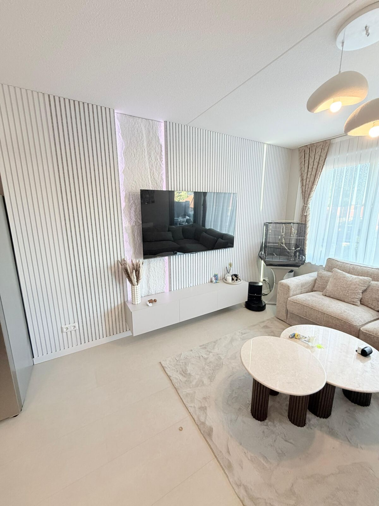
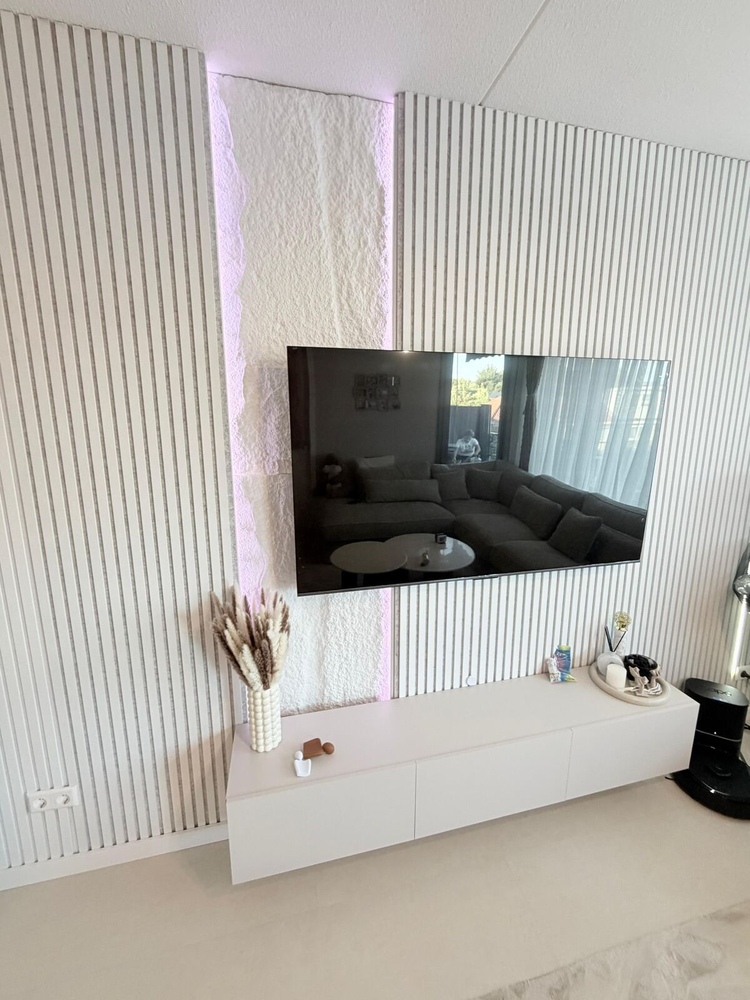
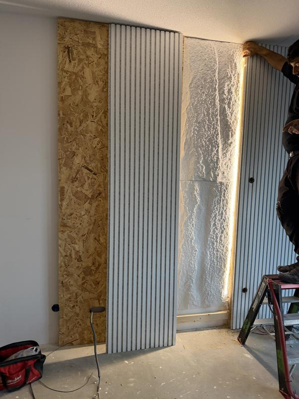

Nieuwe bedrading en leidingen, van één groep tot een complete woning. Veilig volgens NEN 1010.
Verouderde of onveilige bedrading? Wij leggen nieuwe bedrading aan of vernieuwen bestaande leidingen, van één groep tot een complete woning.
Oude stofdraad of bedrading zonder aarde is een brandrisico. Bij een verbouwing is het moment ideaal om alles in één keer te vernieuwen.



Bel, app of vul het formulier in. Een foto van uw meterkast helpt ons alvast op weg.
U krijgt een duidelijke offerte met een vaste prijs, zonder verborgen kosten.
Wij werken netjes en volgens NEN 1010, en ruimen alles op.
Alles wordt getest en wij leggen uit wat er gedaan is.
Stofdraad, stopcontacten zonder randaarde of een groepenkast met smeltzekeringen zijn duidelijke signalen. Een installatie check geeft zekerheid.
Vaak kunnen wij nieuwe draden door bestaande leidingen trekken. Waar dat niet kan, frezen wij nette sleuven.
Ja, wij kunnen in fases werken zodat u in huis kunt blijven wonen.
Wij werken in heel Zeeland, heel Noord-Brabant en heel Zuid-Holland. De plaatsen hieronder zijn maar een greep.
Wij komen in alle plaatsen in Zeeland, onder andere:
Wij komen in alle plaatsen in Noord-Brabant, onder andere:
Wij komen in alle plaatsen in Zuid-Holland, onder andere:
Laat uw naam en nummer achter, dan bellen wij u binnen 24 uur terug. Liever direct contact? Bel of app ons, elke dag van 08:00 tot 18:00.
Vraag vrijblijvend een offerte aan of stuur een foto van uw meterkast via WhatsApp.
Gratis offerte aanvragen